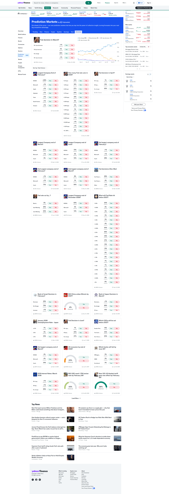
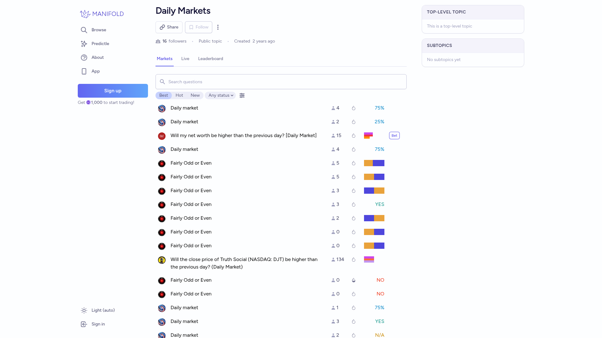
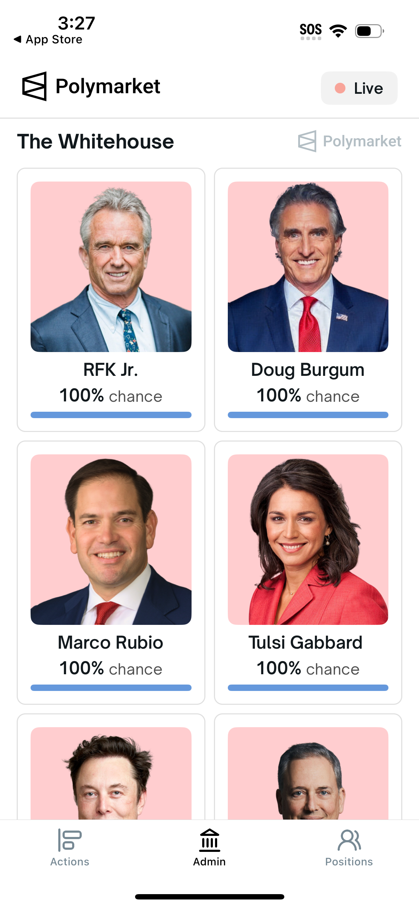

Market Card Probability Redesign Research
Goal: redesign a compact Polymarket article-matcher card while preserving the same information: image, market title, expiry, Yes percentage, No percentage, and probability bar. The card itself remains the click target, so no visible Open button is needed.
Useful Patterns
- Prediction-market cards work best when the odds and bar are visually grouped as one probability module.
- Dense finance dashboards use restrained borders, compact typography, and clear scan lanes instead of decorative buttons.
- Clickable rows/cards should not require a repeated visible action if the whole surface is already interactive.
- Distinct concepts should vary structure, not just colors: split rails, centered capsules, table-like rows, and ticket-like cards.
References



